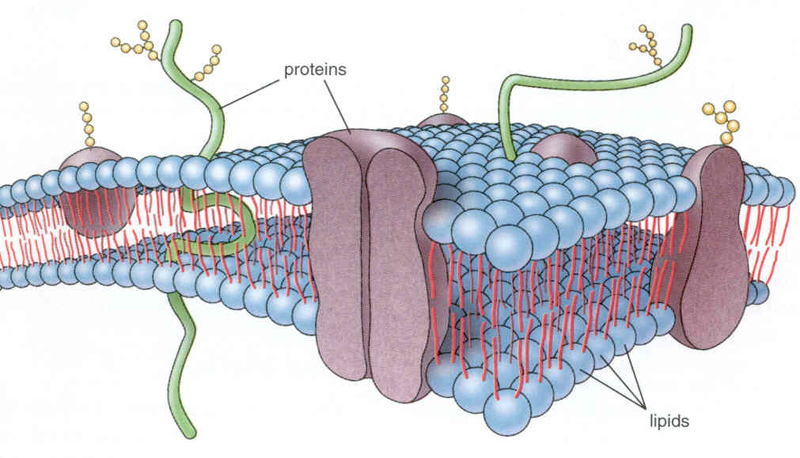

Spennende kombinasjoner av informatikk og andre realfag
29. mars 2016
Hvorfor og hvordan kan programering kombineres med de andre realfagene
Oversikt
- Hvordan har jeg brukt informatikk i medisinsk hjerteforskning
- Hvorfor programmering
- Informatikk i læreplanen idag!
- Matematisk modellering i de klassiske realfagene
Hjerte ABC: Hver hjerteslag startes og synkroniseres av en elektrisk signal
Hjerte ABC: Den elektriske signalen er det vi måler gjennom EKG
Hjerte ABC: I hver celle trigger den elektriske signalen en forsinket kontraksjon
|
|
Hjerte ABC: I hver celle trigger den elektriske signalen en forsinket kontraksjon
|

|
Hvor mye kalsium som kommer ut bestemmes av en komplisert kombinasjon av geometri og kanalfunksjon
- Vi har ikke full kvantiatativ forståelse av hva som kontrollerer hvor mye kalsium som kommer ut i cellen for hvert hjerteslag
Selve kalsiumet kommer ut i rundt 20 000 geometriske områder som er for små for å studere i labben

- Gjennom matematisk modelering kan vi gi sykehusene svar på noen spørsmål de ikke kan få svar på gjennom egne målinger
Fra et set med bilder fra et elektronmikroskop lagde jeg en model av geometrien som tog vare på de geometriske detaljene
Så ble geometrien diskretisert og volumet ble oppdelt i mindre deler
Til slutt beskrev jeg kalsium dynamikken i geometrien med en matematisk modell som ble løst for ulike parameter verdier
Hva fra dette eksemplet er overførbart til bruk av IKT og programmering på VGS?
- Som motivasjon til å:
- lære seg programmering
- jobbe med matematisk modelering
- arbeide tverrfaglig
- Sette søkelys på hvilke kunnskaper elevene trenger for å arbeide med matematisk modelering i ulike realfag
Holder det ikke med de digitale ferdighetene slik vi kjenner de fra grunnleggende ferdigheter i læreplanen?
- Digitale ferdigheter er enligt meg en altfor generell betegnelse for å dekke behovet av spesifikk programeringskompetanse
- Det handler om mye mer enn å bare ta ferdig digital teknologi i bruk!
- Eleven må forstå hvordan den digitale teknologin fungererer og kunne utvikle sin egen
- Programmering gir oss også kunskaper om problemløsning (jmf oppgaveløsning/forsøk i andre realfag!)
Programmering og IT er et marginalisert fag i Norsk skole og risikerer å fortsett være det. Men det finnes lyspunkter!

- Helt nytt (1.2.16) forsøk med valgvalg i programmering i grunnskolen
- Lær kidsa kode
Ludvigsen utvalget understreker viktigheten av digital kompetanse men sier ikke noe spesifikt om IT eller programmering som eget fag (foreløpelig)
|
|
Vi har et programmeringsfag i skolen idag, IT2, men det er mer rettet mot multimedia enn mot de andre realfagene og lar seg ikke lett kombineres med matematisk modelering...
Hvordan kan matematisk modelering og programmering integrerers i dagens realfag?
- Vi bruker allerede matematisk modelering i mange fag!
- Men vi tilbyr oftest bare en analytisk løsning
- Bevegelseslikningene for konstant akselerasjon i fysikk:
$$
\begin{align}
s^{''}&=a
\tag{1}\\
v(t)=s^{'}(t)&= v_0 + a\,t
\tag{2}\\
s &= s_0 + v_0\,t + \frac{a\,t^2}{2}
\tag{3}
\end{align}
$$